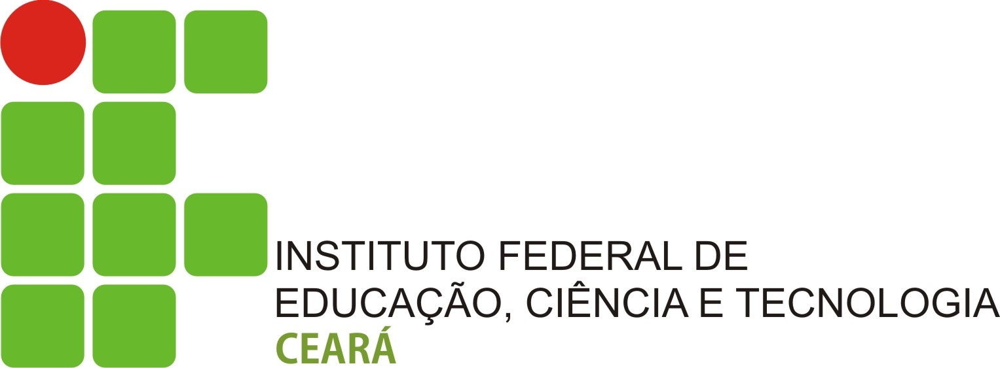

Minha trajetória acadêmica tem sido voltada para a área de Tecnologia da Informação, com foco no desenvolvimento de habilidades práticas e teóricas para atuar de forma eficiente no mercado de trabalho.
Durante o curso, tenho aprendido sobre:
Meu objetivo principal é adquirir experiência prática para atuar como desenvolvedor web ou suporte técnico, além de continuar meus estudos em nível superior na área de Ciência da Computação ou Engenharia de Software.

Esta página é apenas uma atividade da disciplina de Programação Web I